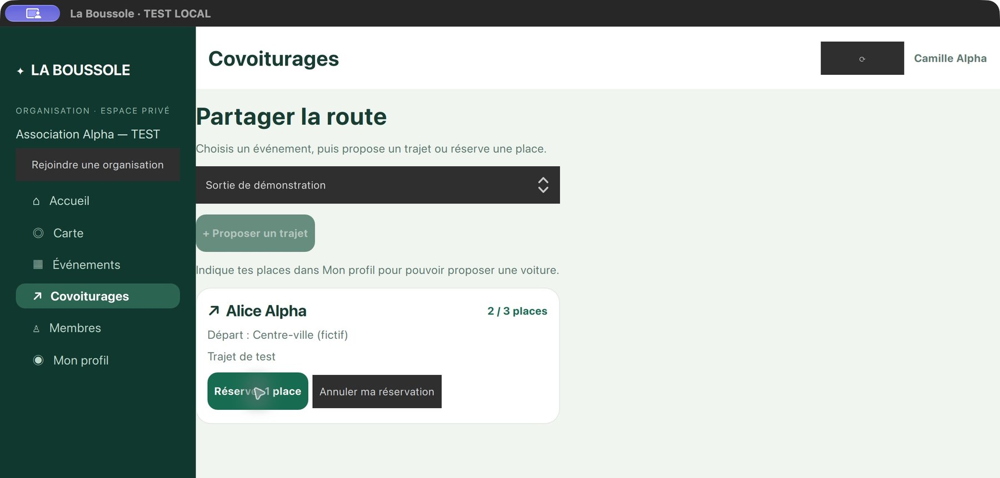

01 / Vie associative
En développement
La Boussole
Un logiciel pour réunir adhésions, événements, covoiturage et réservations des associations, clubs sportifs et groupes scouts.
Découvrir La BoussoleLe terrain comme point de départ.
Le numérique pour aller plus loin.
Assistant commercial et responsable marketing en alternance chez Florimond Deprez. J’étudie, je m’engage et je développe des projets qui partent de besoins concrets.

Deux explorations personnelles : simplifier la vie des associations et rendre l’IA utile au quotidien.

Un logiciel pour réunir adhésions, événements, covoiturage et réservations des associations, clubs sportifs et groupes scouts.
Découvrir La Boussole
Une IA locale sur téléphone et ordinateur : Jarvis Local se télécharge sur chaque appareil, avec une édition agent dédiée au Mac.
Explorer JarvisLe commerce m’apprend à écouter. Le marketing, à donner une direction. Les projets numériques me permettent de transformer une idée en outil.
Chez Florimond Deprez, je relie missions commerciales et projets marketing. À l’IUT de Roubaix, je suis en deuxième année de BUT Techniques de commercialisation, parcours marketing digital, e-business et entrepreneuriat.
Mon engagement de chef de troupe scout complète ce parcours : encadrer, prendre des responsabilités et avancer avec une équipe.
Partir d’un besoin réel et des personnes qui le rencontrent.
Associer sens du produit, communication et outils numériques, avec l’appui de l’IA.
Tester, écouter les retours et distinguer ce qui fonctionne de ce qui reste à développer.
Assistant commercial et responsable marketing · Alternance
Projets marketing internes, appui commercial BtoB, création de contenus et développement d’un CRM.
Commercial et directeur communication et marketing · Roubaix
Stratégies commerciale et marketing, communication, prospection et vente BtoB et BtoC.
Stage commercial
Prospection, accueil des clients et accompagnement à la remise des véhicules.
Engagement bénévole
Responsabilité d’un groupe de jeunes et encadrement d’une équipe de chefs assistants.
En formation à l’IUT de Roubaix · Université de Lille
BUT Techniques de commercialisation, 2e année · Marketing digital, e-business et entrepreneuriat.
Expériences, formation, compétences et projets réunis sur une page. À consulter en ligne ou à télécharger.
Commerce, marketing, vie associative ou projets numériques : je suis toujours partant pour un échange.